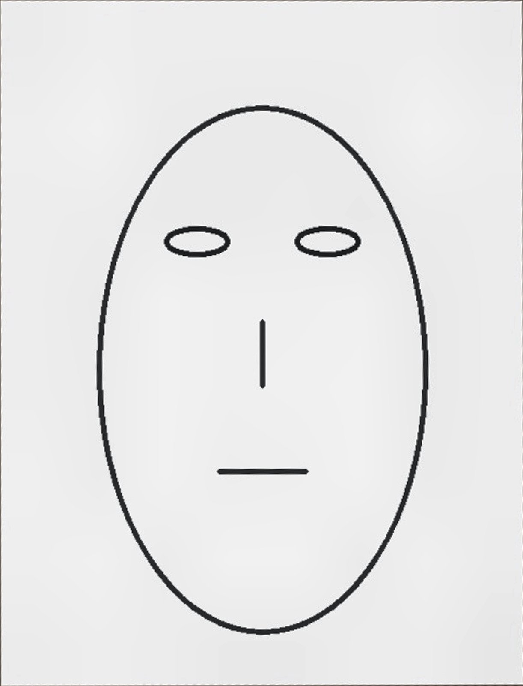

v1


-
1
Eyes placed far too high on the head
In the photo the eye line is about 43% of the way from the top of the head to the chin, close to halfway. In the drawing it is only about 26% of the way down. Move both eyes down by about one-sixth of the head height. Then move the nose and mouth down to match: the bottom of the nose by about a tenth of the head height (it should sit about two-thirds of the way down) and the mouth by about a twelfth (about three-quarters of the way down).
-
2
Head oval too narrow for its height
In the photo the head is about 0.75 as wide as it is tall. In the drawing it is about 0.62. Widen the oval by about a fifth of its current width on each side, or make it shorter, so the face looks rounder like the photo.
👍 1 · 👎 0
-
3
Large shadow on right half of face missing — marked intentional by the artist
The photo has a large, even, middle-dark shadow on the right side of the face. It starts at about the inner edge of the right eye, runs from the forehead to the chin, and leaves a thin lighter strip along the right edge of the head. The left side is a light grey, not white. Shade that right-hand shape as one even middle-dark tone, and give the left side a light grey tone.
Critique by claude-opus-5-5 · lessons ad7383e